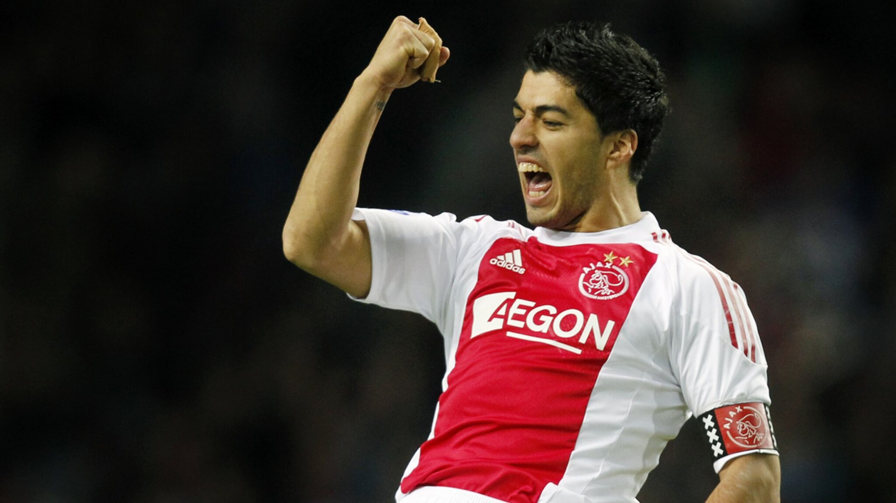
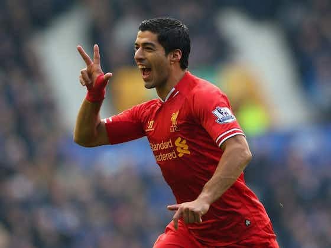
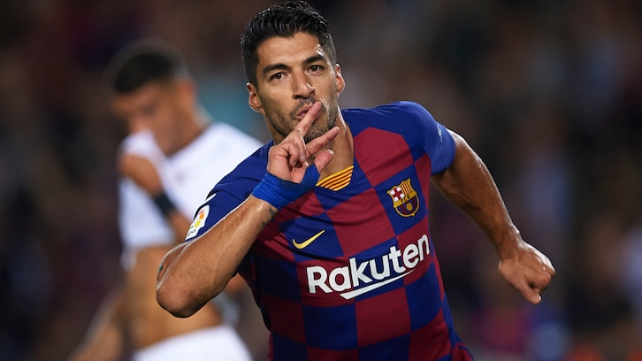

CARRERA
-
CLUB NACIONAL DE FUTBOL (2005-2006)
Prtidos: 34 Goles: 12 Asistencias: 4
-
F.C. GRONINGEN (2006-2007)
Prtidos: 37 Goles: 15 Asistencias: 5
-
AFC AJAX (2007-2010)
Prtidos: 159 Goles: 111 Asistencias: 66

-
LIVERPOOL F.C. (2010-2014)
Prtidos: 133 Goles: 82 Asistencias: 28

-
F.C. BARCELONA (2014-2020)
Prtidos: 283 Goles: 198 Asistencias: 97

-
ATLETICO DE MADRID (2020-2022)
Prtidos: 83 Goles: 34 Asistencias: 6
-
CLUB NACIONAL DE FUTBOL (2022-Presente)
Prtidos: 4 Goles: 2 Asistencias: 1